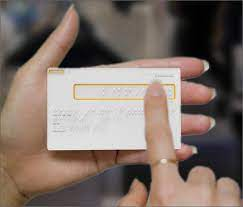
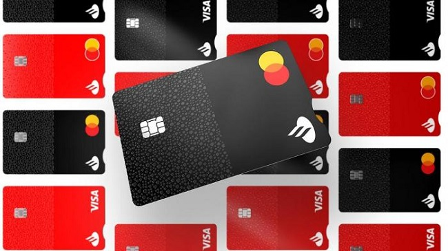

Las personas con discapacidad impulsan la innovación Tecnológica
El mundo está cambiando, la revolución tecnológica está transformando el mundo de forma radical, como
trabajamos, como consumimos, como actuamos ante las desigualdades. Gracias a los avances de las tecnologías como
la Inteligencia Artificial y la Robótica, que aportan herramientas de asistencia y al boom del apredizaje en linea,
las personas con discapacidad se desenvuelven, cada vez más, de forma autónoma y productiva a la par de
cualquier trabajador.
Como ha demostrado el COVID-19, una adaptación rápida es crucial. ¿Estás listo para dar el salto de calidad y ser parte de un mundo mejor para todos?
A continuación, las empresas que ya están transformando el mundo:

Mastercard
Mastercard Inc. está introduciendo una nueva tarjeta para personas ciegas o con discapacidad visual. La
nueva
tarjeta táctil utilizará muescas distintas para ayudar a distinguir entre una tarjeta de débito, crédito o
prepago.
Las diferentes variedades de la tarjeta, que estarán disponibles en 2022, utilizarán muescas físicas para
ayudar
a las personas a usar el tacto para distinguir entre ellas y discernir la forma correcta de insertarlas en
las
máquinas de escaneo, según Mastercard. La tarjeta de débito tendrá una muesca cuadrada, la tarjeta de
crédito
tendrá una muesca redondeada y la tarjeta prepaga tendrá una triangular.

Santander
Banco Santander ha completado el desarrollo tecnológico que convierte en accesibles 3.000 cajeros de su red, casi el 50%
del total en España. Los dispositivos han incorporado un sistema de Guiado por Voz que se inicia en el momento en el que
el usuario introduce unos auriculares. Sus clientes podrán saber la ubicación exacta de la red de cajeros accesibles a través de
los buscadores de cajeros en la APP y la banca online.
En otros países como Brasil, Banco Santander ha adaptado el 95% de sus cajeros al lenguaje Braille; en Argentina los
clientes cuentan con 1.286 cajeros adaptados; en Portugal, más de 2.000 cajeros usan comandos de voz y en Polonia
existen 1.300 cajeros con guiado por voz y etiquetado en braille.
Mappa
El primer mapa del mundo que geolocaliza a todos los bares, cafés, cervecerías, destilerías, hoteles y restaurantes que
se encuentren implementando iniciativas sostenibles, inclusivas y saludables en sus operaciones diarias. Desde 2017 han sido galardonados todos los años con distintos premios y reconocimientos en Argentina, Alemania, España,
Estados Unidos y el Reino Unido.
En el Mappa, el usuario podrá buscar por ubicación, palabra clave, tipo de establecimiento o producto, categoría y/o
iniciativas conscientes, encontrando lugares y productos conscientes e inclusivos cerca de ellos.
También elegir aquellos lugares con accesibilidad para sillas de ruedas, menú en braille, respeto hacia la comunidad
LGTBQ+, staff capacitado en género entre otros.
Nomines
Única empresa argentina que solo contrata en forma exclusiva a personas ciegas, sordas, con limitaciones de movimiento y otras discapacidades sin ningún beneficio impositivo.A los pocos días de haber comenzado a operar, Claudio -ciego y jugador de Los Murciélagos- se sentaba al lado de Noelia,
sin problemas en la vista, aunque con dificultades para entender el sistema. "Ese día entendimos que realmente habíamos creado un lugar de trabajo común" Simeoni,
CEO de Nomines,
"El empleo de PCD no es una cuestión solidaria o filantrópica, sino que se trata de agentes productivos como cualquier
otro. Si una empresa donde el 100% de su personal tiene algún tipo de discapacidad es rentable implica que cada uno de
ellos lo es, y absolutamente por mérito propio", expresó Simeoni.